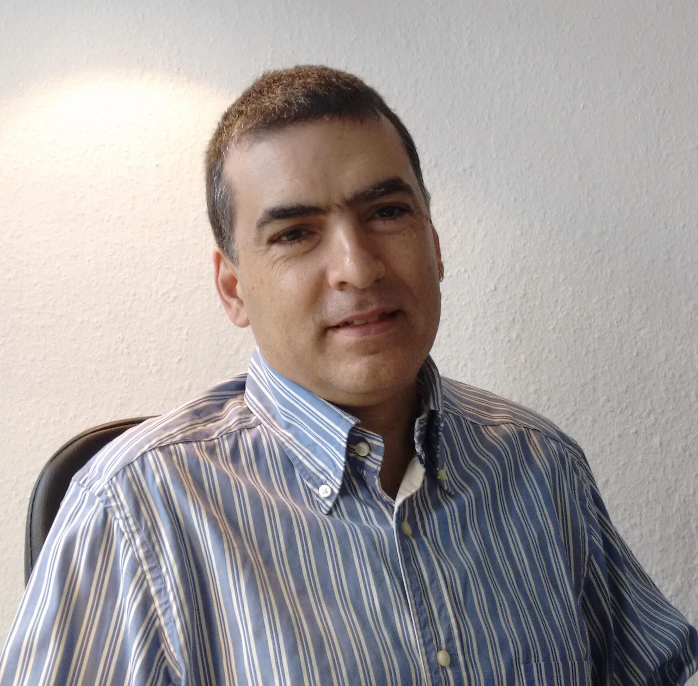

Plataforma
intEligente
paRa la geStión
de rEcursos
basados en iOt
Antonio Skarmeta

Obtuvo su Doctorado en Informática por la Universidad de Murcia en el año 1995. Titular de Universidad por la Universidad de Murcia en al año 1997 y Catedrático de Ingeniería Telemática desde el año 2009. Vicedecano de Infraestructuras de la Facultad de Informática entre los años 1991 a 1993 y posteriormente vicedecano de Relaciones Externas del 1997 a 1999. Ha sido director del departamento de Ingeniería de la Información y las Comunicaciones desde 2001 hasta 2007. Coordinador del programa de doctorado en Tecnologías de la Información y Telemáticas Avanzadas desde el 2002 hasta el 2010, con mención de calidad del Ministerio. Desde el año 2008 es coordinador de la Oficina de Proyectos Europeos de la Universidad de Murcia, adscrita al vicerrectorado de Investigación. Desde la misma ha sido responsable del proyecto de Eurociencia concedido a la Universidad de Murcia, así como del proyecto COFUND concedido asociado al proyecto U-IMPACT-COFUND que ha coordinado como investigador principal. Actualmente es además representante nacional del MINECO en el programa H2020 para el pilar de Ciencia Excelente en el área de MARIE SKŁODOWSKA-CURIE, así como representante en el grupo de Recursos Humanos y movilidad de la Comisión Europea.
Antonio Skarmeta es responsable de grupo de investigación de Sistemas Inteligentes y Telemática de la Universidad de Murcia, grupo identificado como excelencia por la convocatoria de proyectos regionales, y que es lider en la Universidad de Murcia en cuanto a financiación y producción científica. Además el investigador ha sido invesrtigador responsable de varios proyectos financiados con fondos FEDER relativos a Equipamiento Científico-Técnico y Equipamiento de Redes UNMU05-23-002, UNMU13-2E-2536 PEANA: Plataforma Experimental Avanzada de iNternet de las cosAs: Smart Ambient Campus – IoT as a Service” y UNMU08-2R-008 Constelación de PLEIADES así como ayudas para los Parques Tecnológicos LabConect@2, PCT-430000-2010-005, y Proces@2, PCT-430000-2010-006. Ha dirigido 21 tesis doctorales, participado en 20 proyectos europeos y ha sido coordinador de varios proyectos internacionales entre ellos relativos H2020, Regiones del Conocimiento, TEMPUS y Potencial de Investigación. Tiene 27 contratos de investigación con numerosas empresas regionales, nacionales e internacionales así como es autor de 6 patentes 2 de ellas en explotación y 20 registros de la propiedad.
Es autor de más de 120 publicaciones en revistas internacionales, 200 artículos en congresos. Además ha participado en numerosos comités de programas de conferencias en informática, seguridad, redes móviles e Internet de las Cosas como PERCOM, ICC, Globecomm, Adhoc NoW, IEEE SMC, ACM Group, IEEE MSN, TrustBus, etc., siendo chair/cochair de las conferencias WF-IoT 2015, 29016 y 2018, GIoTS 2017, y de los workshops/tracks on IoT de Globecomm e ICC 2015 y 2016, así como de PITSaC on Pervasive Internet of Things for Smart Cities organizado en el marco de la conferencia IEEE AINA, workshop esIoT. Además es editor asociado de la revista IEEE Trans SMC.Part B, Security and Communication Networks, y ha participado como editor en diversos special issue como los de IEE Proc. Communication, IJIPT journal, Computer Networks y International Journal of Web and Grid Services, Mobile Information System, Personal Mobile Communications.
SOBRE PERSEO
En la región del Mediterráneo, la agricultura de regadío aporta el 75% de la producción final. PERSEO impulsa tecnologías TIC para optimizar el uso del agua, habilitar fuentes no convencionales para fertilización e irrigación y reducir el impacto ambiental mediante técnicas de Agricultura de Precisión.
SABER MÁS ↗OBJETIVOS
El objetivo principal de PERSEO es desarrollar experimentalmente una plataforma inteligente y segura para optimizar recursos con tecnologías innovadoras (IA, IoT, Blockchain y HMI), validada en pilotos reales del sector agrícola para su explotación práctica.
VER OBJETIVOS ↗